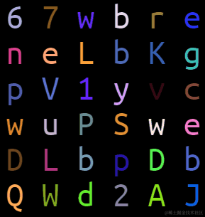

- 60 哪个 css 格式化工具是你的首选
- 59 CSS 选择器详解 12 个必知用法与最佳实践
- 58 动态视口单位之 dvh、svh、lvh
- 57 不规则造型按钮解决方案
- 56 不定宽文本溢出跑马灯效果完美解决方案
- 55 巧用 CSS 变量，实现动画函数复用
- 54 角向渐变的妙用
- 53 有趣的六芒星能力图动画
- 52 有意思的气泡 Loading 效果
- 51 CSS 原生支持的三角函数
- 50 有意思的网格下落加载效果
- 49 有意思的 Emoji 3D 表情切换效果
- 48 神奇的 3D 磨砂玻璃透视效果
- 47 抢先体验！超强大的 Anchor Positioning 锚点定位
- 46 CSS 也能实现碰撞检测
- 45 现代 CSS 解决方案 - 数学函数 Round
- 44 现代 CSS 解决方案 - 原生嵌套
- 43 神奇的背景，生化危机4日食 Loading 动画还原
- 42 当路径动画遇到滚动驱动
- 41 CSS 还原拉斯维加斯球数字动画
- 40 单标签下多色块随机文字随机颜色动画
- 39 CSS 也能实现 if 判断？实现动态高度下的不同样式展现
- 38 Flex 布局下居中溢出滚动截断问题
- 37 带圆角的虚线边框
- 36 现代 CSS 解决方案：文字颜色自动适配背景色
- 35 神奇的 3D 卡片反光闪烁动效
- 34 现代 CSS 解决方案：accent-color 强调色
- 33 巧用 has 和 drop-shadow 实现复杂布局效果
- 32 巧用 CSS + SVG 实现复杂线条光效动画
- 31 极具创意的鼠标交互动画
- 30 标准滚动条控制规范 scrollbar-color 和 scrollbar-width
- 29 类 ChatGpt 多行文本打字效果
- 28 神奇的卡片 Hover 效果与 Blur 的特性探究
- 27 渐变边框文字效果
- 26 巧妙使用多种方式实现单侧阴影
- 25 全尺寸的带圆角的渐变边框
- 24 开发中保证你用得到的 css 小技巧
- 23 您应该了解的 15 个有用的 CSS 属性
- 22 CSS 行元素的截断样式 box-decoration-break 属性
- 21 用 SASS 简化媒体查询
- 20 为什么你应该停止使用传统的 margin 和 padding 来设置 CSS 样式
- 19 sass 优化响应式布局代码
- 18 盘点 CSS 文本两端对齐的 N 种方式
- 17 如何修改滚动条的样式
- 16 CSS 模拟图片透明的棋盘背景
- 15 文本描边完美实现
- 14 你需要自定义 @property 而不是 CSS 变量的情况
- 13 从高度 0 过渡到自动高度
- 12 一些 css 语法解释
- 11 scss 日常用法
- 10 sass 指南
- 09 CSS 颜色设置透明度的新姿势
- 08 CSS 属性 appearance
- 07 CSS 动画性能优化
- 06 CSS 功能特性
- 05 CSS 中的 var() 函数
- 04 15 个你不知道的 CSS 属性
- 03 will-change
- 02 normalize.css 清除元素默认样式
- 01 纯 CSS 获取屏幕宽高
在 CSS 还原拉斯维加斯球数字动画 - 掘金 一文中，我们利用纯 CSS，实现了一个非常 Amazing 的动画效果：

其中一个核心点就是，我们利用了如下的代码，在一个 DIV 平面内，实现了单个平面下的随机文字随机颜色效果。
效果如下：

其中的 HTML 代码大致如下：
<div class="g-container">
<div></div>
// ... 一个 32 个子 div
<div></div>
</div>
这里为了实现上述效果，其实是用了 32 列，每列是一个 DIV。
emmm，对于追求极致的我们，32 个 DIV 确实不太优雅了。那么，CSS 有没有什么方式，能够单个标签实现多列多格子，每个格子颜色不一致呢？像是这样：
答案当然是可以。本文，我们就将一起来探寻，使用 CSS 如何实现单标签下多色块，及单标签下随机文字随机颜色动画效果。
多重背景的威力
思考一下，单个 DIV，我们如何能够实现下述效果呢，譬如一个 DIV 内，有 36 种不同的颜色：
这里的核心，其实就是需要借助多重背景。
正常而言，我们的 DIV 只能有一个 background，设置一种颜色，像是这样：
<div></div>
div {
width: 300px;
height: 300px;
background: #000;
}
效果如下：
但是，合理利用渐变语法的规则，利用多重渐变，我们就可以实现多重背景，我们改造一些上述代码：
div {
position: relative;
margin: auto;
width: 300px;
height: 300px;
background-image: linear-gradient(90deg, #000, #000), linear-gradient(90deg, #f00, #f00);
background-size: 50% 100%, 50% 100%;
background-position: 0 0, 150px 0;
background-repeat: no-repeat;
}
利用多重背景的能力，我们就得到了黑色和红色两个色块：
我们还可以继续拆分，1 拆 4：
div {
position: relative;
margin: auto;
width: 300px;
height: 300px;
background-image: linear-gradient(90deg, #000, #000), linear-gradient(
90deg,
#0f0,
#0f0
), linear-gradient(90deg, #00f, #00f), linear-gradient(90deg, #f00, #f00);
background-size: 50% 50%, 50% 50%, 50% 50%, 50% 50%;
background-position: 0 0, 150px 0, 0 150px, 150px 150px;
background-repeat: no-repeat;
}
效果如下：
它其实是这么个意思，看下面这张图就能很好的理解：
这里我们只标识出了黑色色块和红色色块，另外两个色块的原理也是一样的。
理解了这一点之后，我们要实现如下这个图形就非常轻松了：

当然，这里有个问题，我们手动去写那么多重渐变的代码，工作量是非常之大的，因此，我们可以尝试封装一个 SCSS 函数或者 mixin 帮助我们减轻代码量。
@use "sass:string";
@function randomNum($max, $min: 0, $u: 1) {
@return ($min + random($max)) * $u;
}
@mixin randomLinear($rows: 6, $cols: 8) {
$bg: null;
$pos: null;
$px: 100% / ($cols - 1);
$py: 100% / ($rows - 1);
@for $i from 0 through $rows - 1 {
@for $j from 0 through $cols - 1 {
@if ($bg) {
$bg: $bg + string.unquote(",");
$pos: $pos + string.unquote(",");
}
$color: randomColor();
$bg: $bg + linear-gradient(to right, $color, $color);
$pos: $pos + string.unquote("#{$j * $px} #{$i * $py}");
}
}
background: {
image: $bg;
size: (100% / $cols) (100% / $rows);
repeat: no-repeat;
position: $pos;
}
}
@function randomColor() {
@return rgb(randomNum(205, 50), randomNum(255), randomNum(255));
}
div {
@include randomLinear(6, 6);
}
这里，我们借助 SCSS 封装了一个 randomLinear 的 mixin，它接收两个参数，分别表示行数和列数，基于上面的 background 拆分，实现了多重渐变，如此一来，我们就能在单个 DIV 下得到这样一个随机的多色块格子图：

审查元素，SCSS 编译后的 CSS 代码其实就是这样的：
好，在此基础上要实现颜色的随机变化也非常简单，我们只需要配合 filter: hue-rotate() 变换即可。
代码如下：
div {
@include randomLinear(6, 6);
animation: colorChange 1s infinite steps(10);
}
@keyframes colorChange {
100% {
filter: hue-rotate(360deg);
}
}
这里巧妙的利用了 steps(10)，让整个图形在 1s 内进行 10 次 hue-rotate() 变化。
这里的核心点有两个：
- 利用
filter: hue-rotate(360deg)滤镜，能够实现颜色的切换 - 利用
steps(10)实现了逐帧动画而不是连续的补间动画
如此一来，我们就能得到如下效果，实现了单个标签内多个不同色块，并且可以实现动画变换：
结合 background-clip: text 实现文字效果
接下来，我们需要实现单个标签下的随机文字、随机颜色的动画效果。也就是下图右边的效果：

有了上面的铺垫，其实整个效果就剩下两步：
- 利用
background-clip: text实现从色块到文字的裁剪变化 - 借助 SCSS 函数及 CSS 变量，实现随机文字的变化
首先，与 CSS 还原拉斯维加斯球数字动画 - 掘金 一文中一样，借助 SCSS 函数，编写一个随机字符的函数，通过元素的伪元素 content 进行设置，并且，我们把背景色，也设置给元素的伪元素：
$str: "QWERTYUIOPASDFGHJKLZXCVBNMabcdefghigklmnopqrstuvwxyz123456789";
$length: str-length($str);
@function randomChar() {
$r: random($length);
@return str-slice($str, $r, $r);
}
@function randomChars($number) {
$value: "";
@if $number > 0 {
@for $i from 1 through $number {
$value: $value + randomChar();
}
}
@return $value;
}
div {
width: 300px;
height: 300px;
font-size: 50px;
line-height: 50px;
letter-spacing: 25px;
word-wrap: break-word;
font-family: monospace;
&::before {
content: randomChars(36);
position: absolute;
inset: 0;
@include randomLinear(6, 6);
color: transparent;
}
}
这里，有几个细节点再简单讲解一下：
- 为了让每个字符对齐，我们使用了
font-family: monospace等宽字符，并且利用font-size和letter-spacing确保一行只能放下 6 个字符 - 利用
randomCharsSCSS 函数，随机从我们定义的$strSCSS 字符串变量中取 36 个随机字符 @include randomLinear(6, 6)就是上面铺垫的随机渐变背景
如此一来，我们就能得到这么一个效果：
此时，我们只需要再给元素的伪元素设置一个 background-clip: text 配合文字颜色 transparent，即可得到色块裁剪到只剩下文字部分的效果：
div {
// ...
&::before {
//...
color: transparent;
background-clip: text;
}
}
效果如下：
好，那如何再让整个文字随机变换起来呢？我们只需提前生成多个不同的随机文字 content，然后进行动画切换即可，像是这样：
div {
// ...
&::before {
content: randomChars(36);
--content1: "#{randomChars(36)}";
--content2: "#{randomChars(36)}";
--content3: "#{randomChars(36)}";
--content4: "#{randomChars(36)}";
--content5: "#{randomChars(36)}";
--content6: "#{randomChars(36)}";
--content7: "#{randomChars(36)}";
--content8: "#{randomChars(36)}";
--content9: "#{randomChars(36)}";
color: transparent;
background-clip: text;
animation: contentChange 1.5s infinite linear;
}
}
@keyframes contentChange {
10% {
content: var(--content1);
}
20% {
content: var(--content2);
}
30% {
content: var(--content3);
}
40% {
content: var(--content4);
}
50% {
content: var(--content5);
}
60% {
content: var(--content6);
}
70% {
content: var(--content7);
}
80% {
content: var(--content8);
}
90% {
content: var(--content9);
}
}
这样，文字也能随机动起来了（当然，此处其实是伪随机）：
最后，把上面的 hue-rotate 动画重新打开，就能让文字颜色也随机变换！
至此，完整的代码如下：
<div></div>
@use "sass:string";
@import url("https://fonts.googleapis.com/css2?family=Righteous&family=Ubuntu+Mono&display=swap");
$str: "QWERTYUIOPASDFGHJKLZXCVBNMabcdefghigklmnopqrstuvwxyz123456789";
$length: str-length($str);
@function randomNum($max, $min: 0, $u: 1) {
@return ($min + random($max)) * $u;
}
@mixin randomLinear($rows: 6, $cols: 8) {
$bg: null;
$pos: null;
$px: 100% / ($cols - 1);
$py: 100% / ($rows - 1);
@for $i from 0 through $rows - 1 {
@for $j from 0 through $cols - 1 {
@if ($bg) {
$bg: $bg + string.unquote(",");
$pos: $pos + string.unquote(",");
}
$color: randomColor();
$bg: $bg + linear-gradient(to right, $color, $color);
$pos: $pos + string.unquote("#{$j * $px} #{$i * $py}");
}
}
background: {
image: $bg;
size: (100% / $cols) (100% / $rows);
repeat: no-repeat;
position: $pos;
}
}
@function randomColor() {
@return rgb(randomNum(205, 50), randomNum(255), randomNum(255));
}
@function randomChar() {
$r: random($length);
@return str-slice($str, $r, $r);
}
@function randomChars($number) {
$value: "";
@if $number > 0 {
@for $i from 1 through $number {
$value: $value + randomChar();
}
}
@return $value;
}
div {
width: 300px;
height: 300px;
color: #fff;
font-size: 50px;
line-height: 50px;
letter-spacing: 25px;
word-wrap: break-word;
animation: colorChange 1.5s infinite steps(10);
&::before {
--content1: "#{randomChars(36)}";
--content2: "#{randomChars(36)}";
--content3: "#{randomChars(36)}";
--content4: "#{randomChars(36)}";
--content5: "#{randomChars(36)}";
--content6: "#{randomChars(36)}";
--content7: "#{randomChars(36)}";
--content8: "#{randomChars(36)}";
--content9: "#{randomChars(36)}";
content: randomChars(36);
position: absolute;
inset: 0;
color: transparent;
background-clip: text;
animation: contentChange 1.5s infinite linear;
}
}
@keyframes colorChange {
100% {
filter: hue-rotate(340deg);
}
}
@keyframes contentChange {
10% {
content: var(--content1);
}
20% {
content: var(--content2);
}
30% {
content: var(--content3);
}
40% {
content: var(--content4);
}
50% {
content: var(--content5);
}
60% {
content: var(--content6);
}
70% {
content: var(--content7);
}
80% {
content: var(--content8);
}
90% {
content: var(--content9);
}
}
效果如下：
完整的代码，你可以戳这里：CodePen Demo -- Single Div Random Text And Random Color
多色块的其他解决方案？
我们继续扩展延伸一下，本效果的核心还是如何在一个 DIV 下实现多种不同的颜色。
那么，除了上述的技巧，还有其他方式能够在一个 DIV 下实现多种不同颜色吗？
这里，我们还可以利用内联元素的 background 展示特性来实现。
什么意思呢？其实 background 的展示，在 块级元素状态 和 内联元素状态 下的展示规则是不一样的。
表现为 display: inline 内联元素的 background 展现形式与 display: block 块级元素（或者 inline-block、flex、grid）不一致。
简单看个例子：
<p>Lorem .....</p>
<a>Lorem .....</a>
这里需要注意，<p> 元素是块级元素，而 <a> 是内联元素。
我们给它们统一添加上一个从绿色到蓝色的渐变背景色：
p,
a {
background: linear-gradient(90deg, blue, green);
}
看看效果：
什么意思呢？区别很明显：
- 块级元素的背景整体是一个渐变整体
- 内联元素的背景效果是以行为单位进行串连的，每一行都是会有不一样的效果，每行连起来整体组成一个完整的背景效果
基于这一点，我们同样可以实现单个 DIV 下的多重背景。
举个例子：
<div class="g-container">
<span>ABCDEFGHIJKL</span>
</div>
div {
width: 300px;
}
span {
color: #000;
font-size: 50px;
line-height: 50px;
letter-spacing: 25px;
word-wrap: break-word;
background: #fc0;
}
此时，我们只设置了一个背景 background: #fc0，效果如下：
基于上面说的技巧，我们改造一下 background: #fc0，拆分成多段渐变背景：
span {
//...
background: linear-gradient(
90deg,
#fc0 0 25%,
#0f0 0 50%,
#00f 0 75%,
#f00 0 100%
);
}
这里，我们每隔 25%，设置了一段不同的颜色，如此一来，整个背景色就变成了 4 块：
基于这个技巧，我们同样可以封装一个 SCSS 函数，用于在单个 DIV 下生成多段色块。代码如下：
@use "sass:string";
@import url("https://fonts.googleapis.com/css2?family=Righteous&family=Ubuntu+Mono&display=swap");
$str: "QWERTYUIOPASDFGHJKLZXCVBNMabcdefghigklmnopqrstuvwxyz123456789";
$length: str-length($str);
@function randomNum($max, $min: 0, $u: 1) {
@return ($min + random($max)) * $u;
}
@function randomColor() {
@return rgb(randomNum(205, 50), randomNum(255), randomNum(255));
}
@function randomLinear($count) {
$value: "";
@for $i from 0 through ($count - 1) {
$j: $i - 1;
$value: $value +
randomColor() +
string.unquote(" #{$j * 50}px #{$i * 50}px,");
}
@return linear-gradient(
90deg,
string.unquote(#{$value}) randomColor() 0 100%
);
}
span {
background: randomLinear(36, 50);
}
上面的代码，我们实现了一个 randomLinear($count, $width) 的 SCSS 函数，其中：
$count表示需要的色块个数$width表示每个色块的宽度
如此一来，在一个 300px x 300px 的内联元素内，我们同样可以实现多个不同的随机颜色。利用这个技巧，一样可以实现单个平面下的随机文字随机颜色效果：

剩余的技巧都是相同的，这里就不再赘述，此技巧的完整代码，你可以戳这里：CodePen Demo -- Single Div Random Text And Random Color